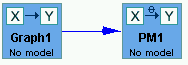
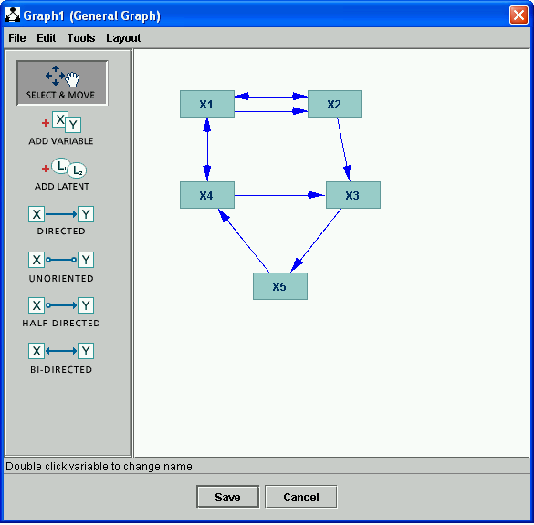
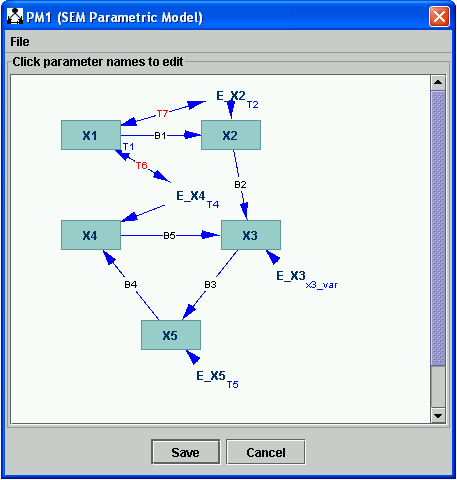

SEM Parameteric Model |
A SEM Parametric Model (SEM PM) is structural equation model (SEM) up to specification of what the parameters of the model are, without giving values for those parameters.
The implementation of structural equation models in Tetrad essentially follows Bollen (???). A structual equation model is a set of linear equations expressing each variable as a linear sum of its parents plus an exogenous error term--e.g.,
X1 = a1 * X2 + a2 * X3 + e1,
X2 = a3 * X3 + e2,
and so on, where the distribution of each error terms has a specified variance, and correlations among error terms are specified.
The graph for such a system consists of one node for each variable, one node for each error term (which may be hidden, or at least the error terms for exogenous variable may be hidden), a directed edge from each variable on the right hand side each such equation above to the variable on the left hand side of the equation, and bidirected edges between each pair of variables whose error terms are correlated. (If the error term for a variable is being shown the bidirected edge attaches to the error terms instead of the variables itself.) Cyclical dependencies among variables are permitted. See SEM Graph for details.
The parameters in this model consist of:
The number of parameters, therefore, is equal to the number of edges in the graph of the model with error terms hidden (directed plus bidirected) plus the number of variables in the model. (When error terms are shown, extra directed edges are added to the graph from error terms to their variables; these to not add parameters to the model.)
The SEM Parameteric Model specifies only this list of parameters and allows this list to be edited. To give specific values for each parameter in the model, one should use the SEM Instantiated Model.
For example, say you put the following boxes on the session, connected as follows:

Say you start by creating a SEM Graph in the Graph box. (See SEM Graph for details.) To make it interesting, we create a SEM Graph that uses a couple of bidirected edge and has a cycle.

If you click "Save" and double click the PM1 box, you are given a choice of which model type you would like to construct. Choose "SEM Parametric Model."
Once you click OK, the following dialog appears:
In this dialog, error terms for endogenous variables are shown explicitly, and all of the parameters are labeled. Parameters B1, B2, B3, B4, and B5 (shown in black) are linear coefficients in the underlying structural equation model; parameters T1, T2, T3, T4, and T5 (shown in blue) are error variance terms; parameters T6 and T7 (shown in red) are error covariance terms.
In the dialog, you can double click on any parameter and change its name. For instance, you can double click on the variance term T3, above, and change its name to "var_x3". Also, a fact which becomes important in SEM estimation, one can set here whether this parameter should be held fixed for estimation and control its starting value for estimation. (In SEM estimation, parameters are initialized in general randomly and then adjusted by an optimization algorithm to optimize, e.g., the maximum likelihood function for the model. See SEM Estimator for details. You can control here how these values are initialized for this process.)

Clicking OK, you see that the name of the paramter has been changed.

It is important to notice what you cannot do in this editor. You cannot change the list of variable or the names of variables, and you cannot add or remove edges to the graph. To do these things, simply edit the graph that was used to construct the SEM PM model.
The SEM PM must be constructed using an nodes that has a graph in it of a type that can be used to construct a structural equation model. The obvious choice is a SEM Graph, since with this graph, you can add bidirected edges and cycles. You can, however, construct a SEM PM using a Directed Acyclic Graph, if you don't care that the graph cannot contain bidirected edges or cycles, or a General Graph, if you don't mind making sure on your own that the graph contains only directed and bidirected edges.
There are two natural children for a SEM PM.